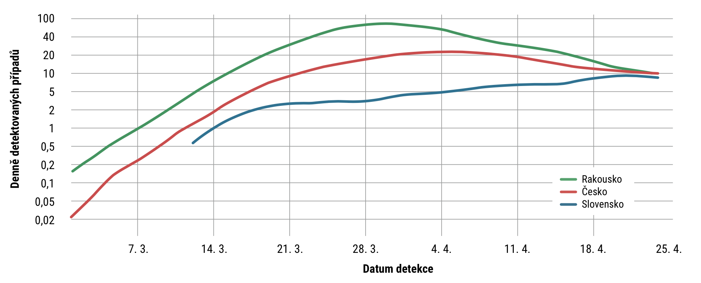

Úvod
Česko má teď jasné cíle zastavit šíření koronaviru na našem území, zachránit
ekonomickou situaci země
a pomoci tak lidem, organizacím i firmám. Piráti se k těmto cílům také hlásí a ve vedení Prahy, dalších
samospráv
i v konstruktivní opozici ve sněmovně se na nich naplno podílíme.
Piráti kladou důraz na to, aby se stát ke krizi postavil chytře, utrpěli jsme co
nejmenší ztráty a naše další kroky vedly
k posunu naší ekonomiky a kvality života směrem k těm nejvyspělejším zemím.
Plošná omezení vlády jsou sice jednoduchá, ale při delším používání zbytečně
drahá. Aktuální data ukazují, že šíření
nákazy je v Česku za vrcholem a daří se nám počet nově nakažených úspěšně snižovat (údaje k 26. 4.). Proto
je
možné plošná opatření omezit a více se soustředit na chytrá řešení.
Nákaza koronavirem v Česku
Graf č. 1: Počet detekovaných případů denně v České republice – sedmidenní
pohyblivý průměr. Graf ukazuje, kdy byla zavedena plošná celostátní opatření a kdy se projevila. Detekovaná data
mají cca 11 dní zpoždění proti skutečnému počtu nakažených (např. kvůli inkubační době
a vyhledávání nakažených). Zdroj: Ministerstvo zdravotnictví, vlastní výpočty
- Chytrá řešení nejsou nutně digitální, ale ta s vysokým poměrem ceny a
výkonu v dostatečně rychlém čase. Máme vyšší ambice než se vrátit před začátek epidemie. Krize nás sice silně
zatíží, ale přinese i nové příležitosti a chceme, aby je Česko využilo. Chceme upřednostnit investice do
oblastí, které nejvíce pomůžou vyspělosti a pokroku
české ekonomiky. Chceme být mozkovnou, ne montovnou, protože krize ukázala, jaký potenciál leží v našich
lidech a firmách. Stejnou cestou musí jít stát, ať už jde o elektronické vyřizování věcí na úřadech či studium a
práci z domova, nebo nové způsoby spolupráce napříč obory se zapojením vědeckých kapacit. U všech opatření je
třeba pečlivě vyhodnotit dopad na svobodu a soukromí a lidem je srozumitelně vysvětlit.
- Chytré plánování nejde proti vládní snaze řešit krizi, ale doplňuje ji o
nové konkrétní podněty, kde jsme se inspirovali zeměmi, které si vedou lépe než Česko a poučily se z viru SARS.
Jak ukazuje následující graf, ve srovnání se sousedními zeměmi nejsme supermani, ale ani nijak nezaostáváme –
jsme na tom průměrně. Měli jsme vyšší podíl nakažených než Slováci, ale míň než Rakušané. Hlavně, že se daří
snižovat podíl prokázaně nakažených.
Šíření Nákazy koronaviru v Česku a sousedních státech

Graf č. 2: Srovnání detekovaného počtu nakažených k danému dni pro Českou
republiku a sousední země. Zobrazeny jsou sedmidenní pohyblivé průměry počtu nakažených na milion obyvatel. Zdroj:
Our
World in Data
Tento ani žádný jiný plán není vytesaný do kamene. Nezbytnou součástí našeho plánu je i pružná reakce na aktuální
situaci. Ale jak řekl vynálezce a státník Benjamin Franklin: „pokud selžete v plánování, plánujete tím
svoje
selhání“. Právě k chytřejšímu zvládnutí boje proti koronaviru a budoucích krizí má tento plán Pirátů přispět.
Nyní již následují tři části plánu podle horizontu, ve kterém je vhodné opatření přijmout: do prázdnin, do konce
roku a pro další budoucnost. V plánu jsme označili:
- fajfkou doporučení pro vládu, co má dělat,
- křížkem doporučení pro vládu, co nemá dělat.